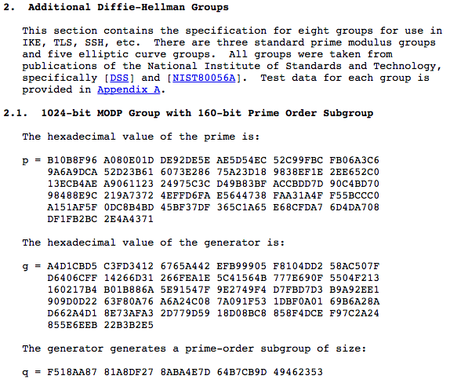

Real World Impacts of Cryptography Policy
Shaanan Cohney
15/07/2016

Abstract
Cryptography and cyber security policy have recently taken center stage in the media and in governmental debate. While it is difficult to keep policy makers and the public informed of technical challenges, the use of strong case studies may better suggest policy directions.
This presentation will cover an overview of policy issues affecting the public, as well as investigating the potential impact and effects of a few real world vulnerabilities. The first of these relating to the SSL/TLS cryptosystem along with munitions export policies of the 90s and the subsequent, a investigation of a 'backdoored' random number generation specification and the resulting VPN vulnerability.